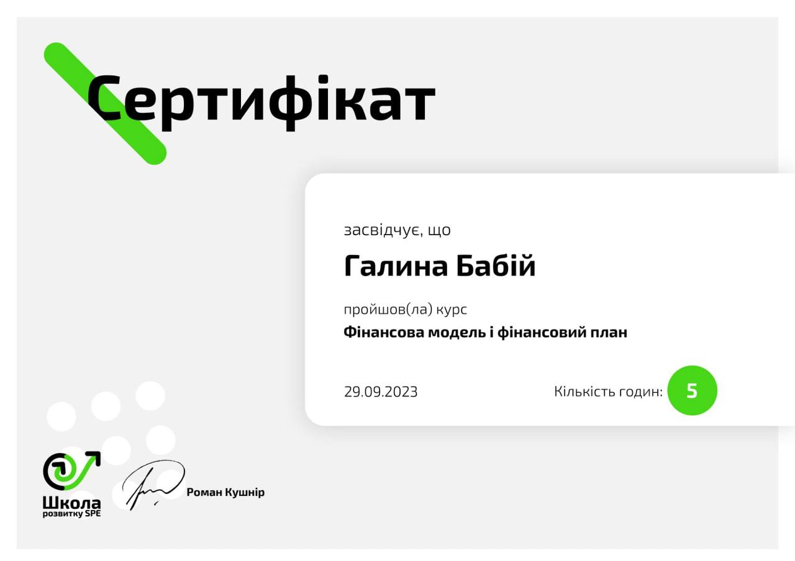

Про нас та наші сертифікати

Ірина Цюк
Ірина Цюк - тренер ефективного мислення, провідний економіст.
Я підсилюю людей, піднімаю ефективність у всіх сферах життя за допомогою
глибокої внутрішньої роботи інструментами коучингу,
нейро-лінгвістичного програмування, психосоматики.
Бабій Галина
Бабій Галина - фінансовий наставник, консультант,
інвестор Британського інвестиційного фонду та учасниця
українського найпотужнішого комюніті United Invest Team.
Зі мною люди вчаться керувати своїми фінансам, наводити в них
лад та розпочинати шлях інвестора.
Оплатити курс